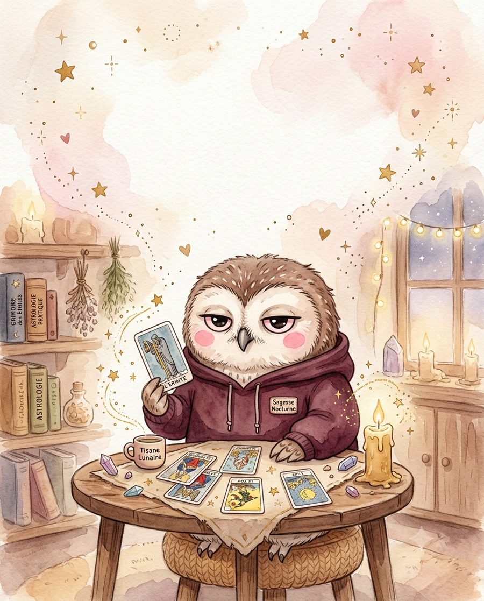
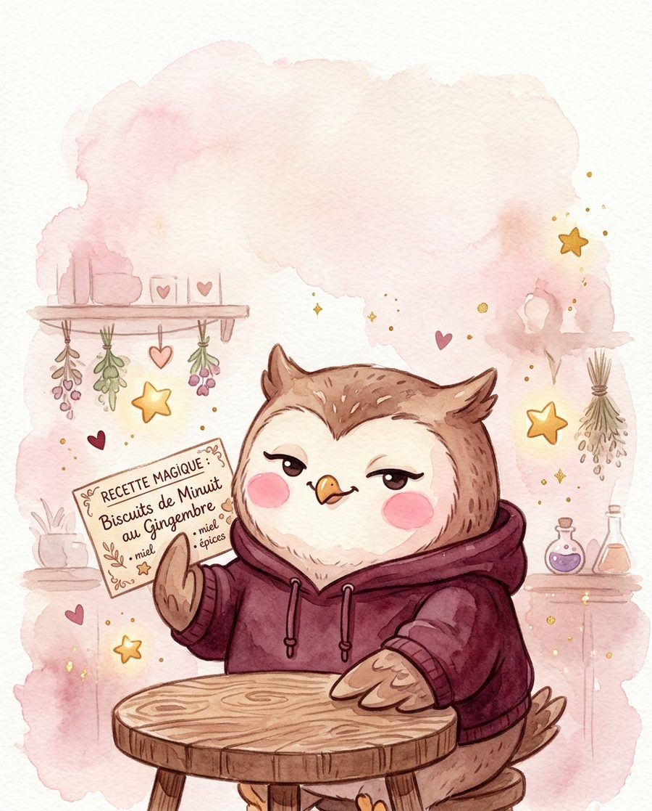
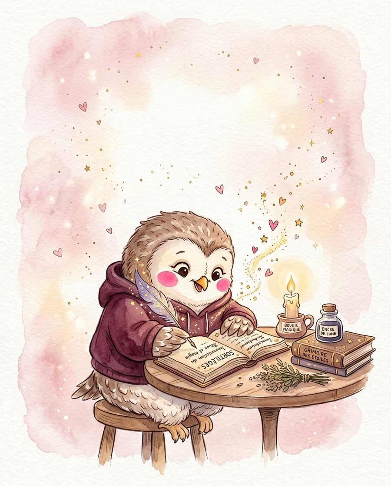

par la Chouette Cosy
Un coin cosy pour explorer la sorcellerie douce et la magie du quotidien, écouter et te chouchouter — choisis où tu veux aller.
Chargement d'une pensée cosy…
Un mot sur cet univers
Ici, la magie ne fait pas peur : c'est une magie du quotidien, tissée de petits rituels, de phases lunaires et de tasses de thé fumantes. Que tu débutes en sorcellerie douce ou que tu pratiques depuis longtemps, tu trouveras de quoi nourrir ta curiosité — tarot et oracles, pierres et cristaux, sortilèges, calendrier des sabbats, astrologie... Une invitation à ralentir et à réenchanter les gestes simples, sans jamais se prendre trop au sérieux.

Ton grimoire numérique : tarot, pierres, rituels, astrologie et bien plus.

Mugs, tee-shirts, casquettes et tote bags à l'effigie de la chouette.
Découvrir la boutique →
Le Grimoire de la Chouette Cosy, et Le Coin Spooky : vingt-quatre légendes, mystères & affaires.
Le podcast : bien-être, sorcellerie légère et entrepreneuriat féminin.
Petites questions
Une magie du quotidien plutôt qu'une pratique spectaculaire : de petits rituels, l'attention portée aux phases de la lune, une bougie allumée avec une intention claire, une tisane préparée en conscience. Pas besoin de grimoire ancestral pour commencer — juste l'envie de ralentir.
Non, absolument pas. Le Coin Mystique est pensé pour accueillir aussi bien les débutantes que les pratiquantes confirmées, avec des explications simples et bienveillantes, sans jugement ni jargon compliqué.
Un grimoire numérique cosy : tirages de tarot et d'oracles, fiches sur les pierres et cristaux, sortilèges et rituels doux, calendrier des sabbats et des phases lunaires, astrologie, numérologie, runes, et bien d'autres arts divinatoires à explorer à ton rythme.
Bien-être, sorcellerie légère et entrepreneuriat féminin, avec des épisodes pensés comme une pause chaleureuse au coin du feu.
Ton avis compte
Un petit avis prend une minute et aide énormément d'autres personnes à découvrir Le Coin Mystique, le podcast et la boutique.